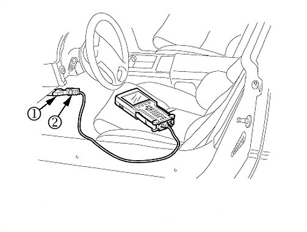
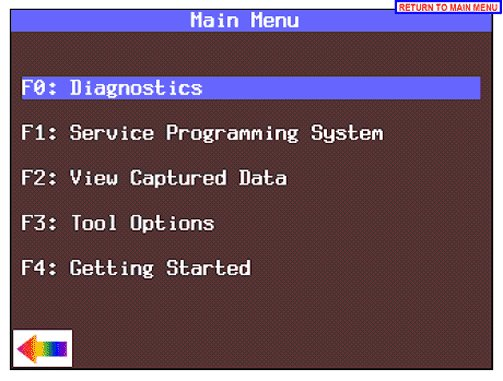
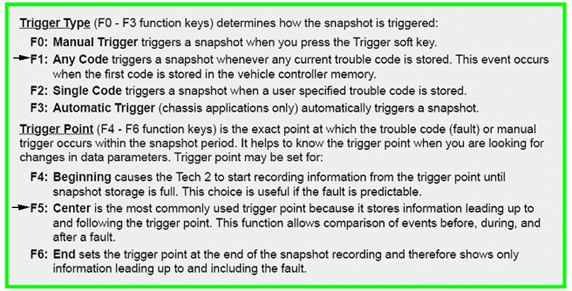
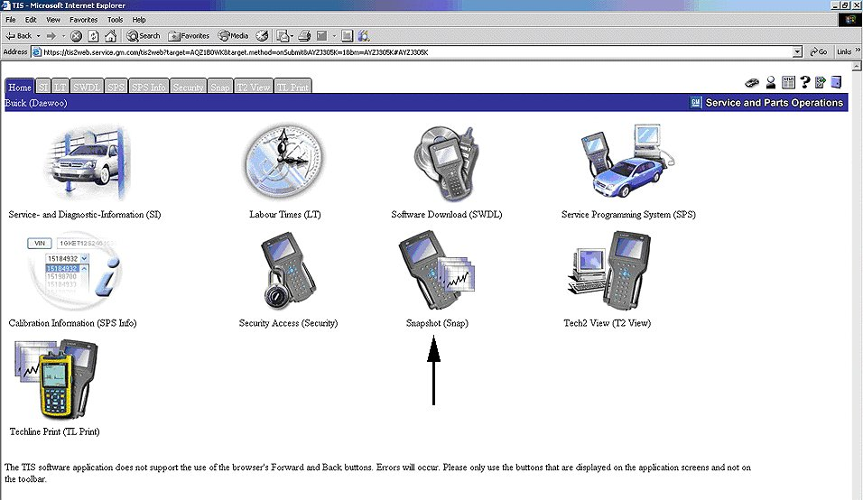
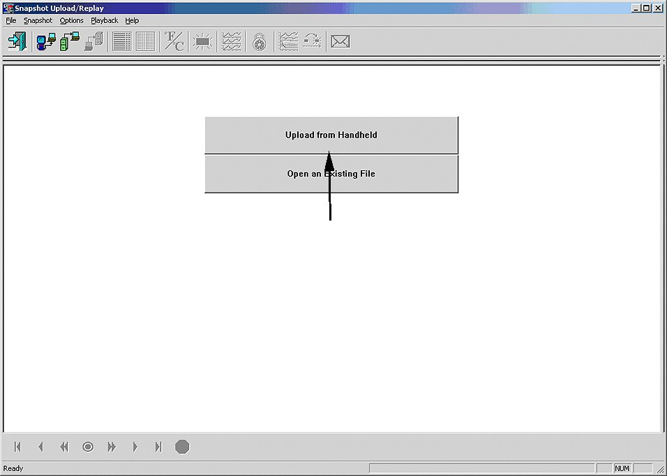
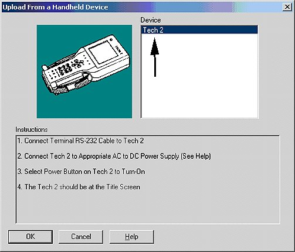
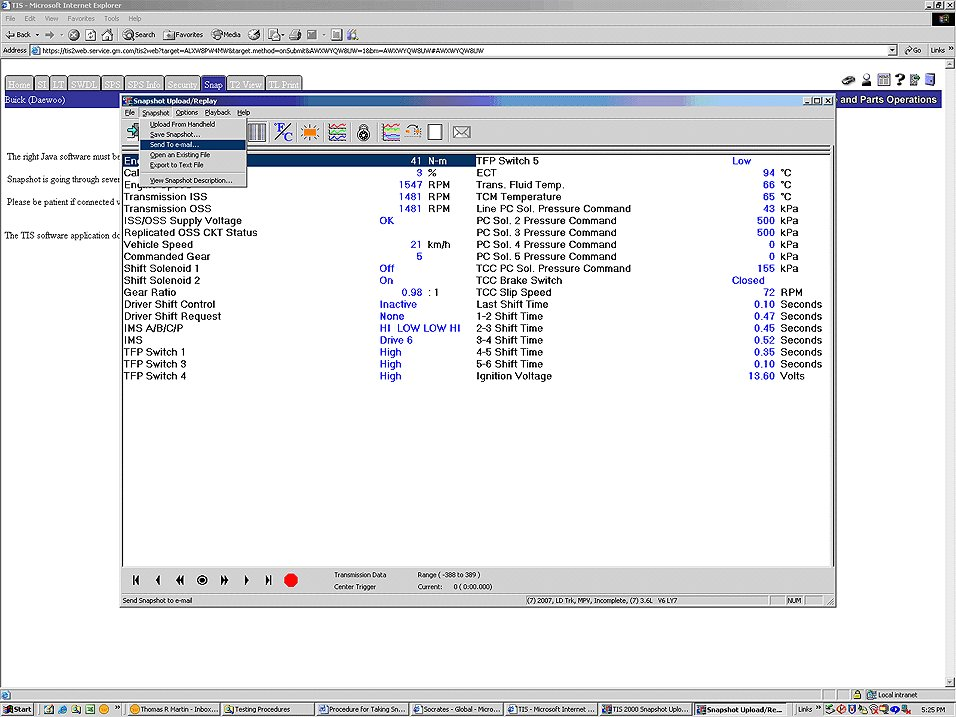
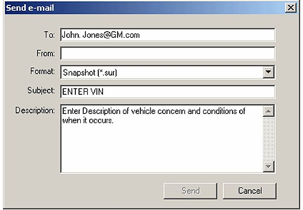
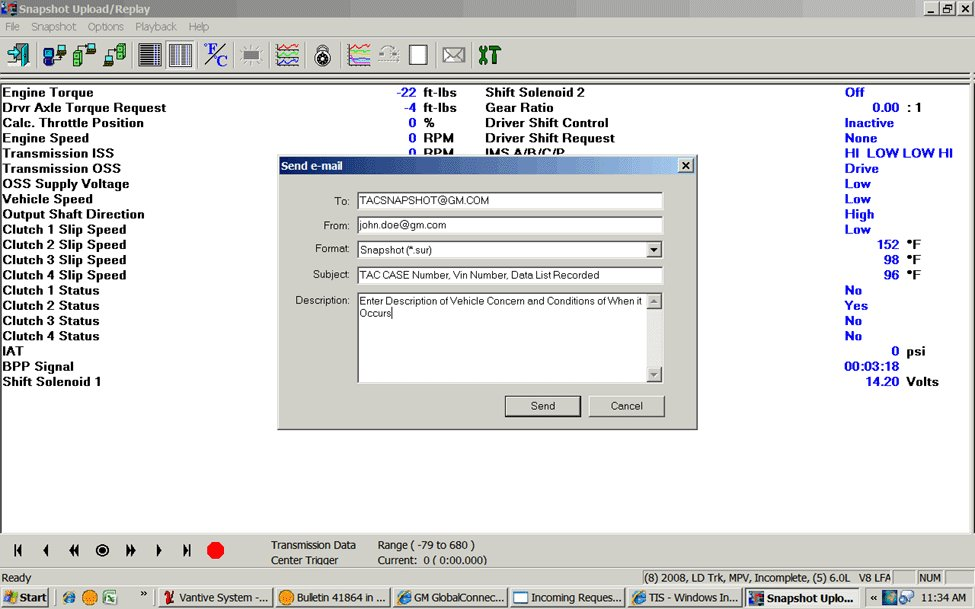

A/T Controls - Snapshot Data With Tech2(R) Information
INFORMATIONBulletin No.: 07-07-30-010C
Date: December 15, 2011
Subject: (R)Procedure to Take Snapshot Data with a Tech 2 and Upload Data to a Computer Using TIS Software
Models:
2004-2012 GM Passenger Cars and Light Duty Trucks
Supercede:
This bulletin is being revised to add model years and update the information. Please discard Corporate Bulletin Number 07-07-30-010B (Section 07 - Transmission/Transaxle).
Important
Global Diagnostic System (GDS2) will take the place of the Tech 2(R) on certain vehicles when communicating and diagnosing vehicle on-board electrical systems. This new diagnostic tool platform and software will be required for use with all GM Global Architecture (Global A) vehicles. These vehicles will no longer permit Tech 2(R) communication for diagnostic purposes. For further information, refer to the latest version of Corporate Bulletin Number 09-00-89-019 (Introduction of New Global Diagnostic System (GDS2)).
This procedure is intended to show the user how to take snapshot data with a Tech 2(R) and upload it to a computer. The procedure is written for an automatic transmission data snapshot on a Saturn AURA, but is similar for all applications. This procedure is written with the assumption the user has a basic understanding of how to use a Tech 2(R) already.
Capturing a Snapshot of the Vehicle Data Stream

1. Connect the Tech 2(R) to the vehicle Data Link Connector (DLC) as shown above. Use a CANdi module as required.
2. Power up the Tech 2(R) and press the ENTER key at the start-up screen.

3. From the Main Menu select F0: Diagnostics.
4. Enter all vehicle information as requested on the scan tool's display. Bolded selections are vehicle specific.
- Select "2007"
- Select "Passenger Car (F0)"
- Select "Saturn"
- Select "Z"
- Select "Aura"
- Select "Powertrain"
- Select "3.6L LY7"
- Select "Transmission"
- Select "Transmission Data"

5. From the application menu, select F3: Snapshot.
- Choose trigger type and trigger point, as described above.
- It is preferred to trigger on "Any Code" (F1).
- If multiple codes are setting, select "Single Code" and enter the code you are trying to capture on the next screen.
- Select "Center (F5)" for the trigger point. This allows the requester/viewer of the data to see the events before and after the code sets.
6. Press the Record Snapshot soft key. The Tech 2(R) screen will display the parameters it is going to record for live viewing.
- When the fault occurs, the Tech 2(R) will automatically start recording if the preferred settings (F1 and F5) are selected.
- If manual trigger is selected during the setup procedure, you will have to hit the "Trigger" soft key to actually record data. Otherwise, it will automatically start recording when a DTC is set.
- Allow the Tech 2(R) to record the data.
Please note that a Tech 2(R) can record a maximum of 1 minute of data (30 seconds before and 30 seconds after the trigger point if center trigger is selected).
Important
The Tech 2(R) can only record two snapshots prior to uploading to a computer. If a third snapshot is requested, the first snapshot will be overwritten.
7. When the snap shot data has been recorded, exit to the Main Menu, then power down and disconnect the Tech 2(R) from the vehicle.
Uploading and Sending a Snapshot via TIS2WEB
Figure 8

Figure 9

1. Once TIS2WEB is launched and you're at the main screen, select Snapshot, indicated with a arrow in Figure 8.
2. Select the Upload from Handheld button to launch the device selection screen just like the TIS 2000 procedure described above.
Figure 10

3. Select the top button, "Upload from Handheld" which will launch the screen displayed in Figure 10. Make sure the Tech 2(R) is connected to the computer and plugged in. Select Tech 2(R) under Device and select OK. The screen of your Tech 2(R) should start blinking and a line will start scrolling across the screen indicating it is communicating with your computer.
Figure 11

4. Once communication is established and you select the file you want to upload, you will see a screen similar to below. You can email the file directly from TIS2WEB by going to the Snapshot drop down menu and selecting "Send to e-mail" as shown in Figure 11.
Figure 12

5. After selecting Send to e-mail, a dialog box like the one shown in Figure 12 will be displayed. Fill in the information as requested and then click send. Include the VIN in the subject line.
6. After all the information is entered, hit the send button. After sending the file, you will receive a confirmation box letting you know the e-mail was sent successfully.
7. It is recommended to now save the file to your computer using the same procedure as if you were using TIS 2000 in case your recipient doesn't receive your email with the snapshot data.
Important
Sending the file via e-mail through TIS2WEB does NOT save the file locally and there is no way to access your sent mail in TIS2WEB like a regular e-mail program.
Sending a Snapshot to GM TAC

During your call with GM TAC on a current case, you may be advised to send a copy of the Tech 2(R) or VDR Snapshot Data to the TAC e-mail box.
Please complete the following:
- Be sure to review the procedures listed above for uploading and sending a Snapshot via TIS2WEB.
- If you are using a VDR to capture Snapshot Data, information can be accessed in the Techlink Website in the articles (December 2002, December 2003, July 2004 and January 2006).
- Please be sure to identify the snapshot by placing the TAC Case Number, the last eight digits of the VIN and the type of data (i.e. engine or transmission) in the subject line of your e-mail. The email Subject Line MUST contain the TAC case number and last 8 digits of the VIN or their email can not be processed and will be deleted.
Please send only REQUESTED Snapshot Data to the TAC e-mail box.

Discdlaimer